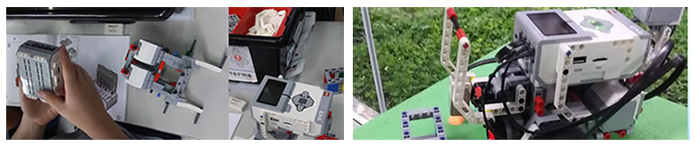
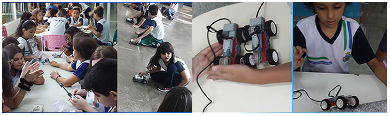

eDB - EMEF ANACLETO CAMPANELLA
MARIA ANTONIA CHAGAS VICENTE
DIÁRIO DE BORDO DIGITAL
A EMEF Anacleto Campanella, escola municipal da cidade de São Caetano do Sul,
modalidade Ensino Fundamental do 1 º ao 5º ano de período Integral, que visa primordialmente
a produção de conhecimento no espaço das relações ensino/aprendizado.
O compromisso da EMEF Anacleto Campanella com a Educação e a Cultura, se traduz na qualidade de
um projeto educacional fundamentado num trabalho de reflexão constante, em sintonia com o que se
produz de mais avançado nas áreas de conhecimento relacionadas com Educação.
O aluno é a razão de ser da proposta pedagógica da EMEF Anacleto Campanella. Isso significa que
cabe à escola propiciar à criança e ao jovem a aquisição e a produção de conhecimento, respeitando
a sua individualidade.
A relação de confiança mútua e a identificação da comunidade de pais com os valores básicos da Escola,
são fatores fundamentais para a plena realização da proposta educacional.
Ao conhecer a nossa escola é possível entrar em contato com o que há de melhor em nós: a dedicação à educação.
Robótica
Preparando os alunos para não serem apenas usuários de ferramentas tecnológicas, mas capazes de criar, solucionar problemas
e usar os vários tipos de tecnologias de forma racional, efetiva e significativa.


Cyberpedagogia 2020 - EAD
|